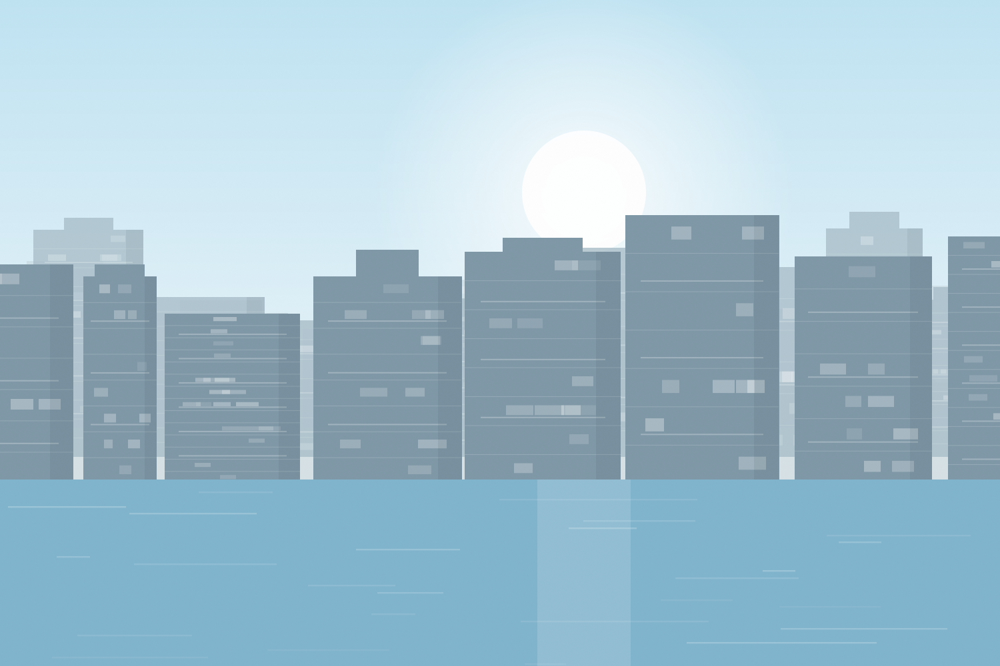
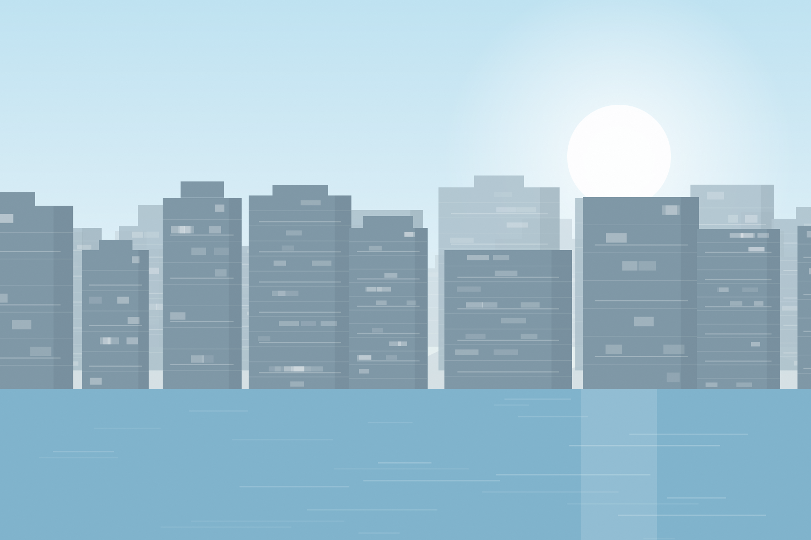

Exemple de fiche
Costa del Sol — Estepona
Marina Estepona
- 2 · 3 chambres
- Piscine commune
- Parking
- Proche mer
En commercialisationDemander la fiche

La Méditerranée espagnole reste l'un des marchés les plus accessibles d'Europe pour un acheteur étranger. Encore faut-il connaître les frais réels, les délais réels et ce qui a changé récemment dans la loi.
Deux logiques différentes : le neuf côtier pour l'usage et la location saisonnière, l'ancien urbain pour le rendement à l'année. Nous ne présentons pas le second comme le premier.

Exemple de ficheFiches d'exemple. Vos programmes réels, avec photos, plans et prix, viendront les remplacer.
La procédure est balisée et rapide dès lors que le NIE est obtenu. C'est presque toujours lui qui décide du calendrier.
Le Número de Identidad de Extranjero est indispensable pour acheter, ouvrir un compte et payer les impôts. Il s'obtient au consulat d'Espagne ou en Espagne, et le délai de rendez-vous est le vrai goulot d'étranglement — on le lance en premier.
Nécessaire en pratique pour régler le prix, les frais et ensuite les charges et les taxes locales.
Une réserva retire le bien du marché. Vient ensuite le contrato de arras, généralement avec 10 % du prix. Attention au type d'arras : selon la formule, se rétracter coûte le dépôt, le double, ou ouvre à des poursuites. Ce n'est pas un détail de rédaction.
Nota simple du Registro de la Propiedad (propriétaire réel, hypothèques, servitudes), certificat d'urbanisme, charges de copropriété impayées, certificat énergétique, licence de première occupation pour le neuf.
L'acte est signé devant notaire, le solde est versé, les clés sont remises. Vous pouvez signer par procuration si vous ne pouvez pas être présent.
Le notaire notifie le registre, puis l'inscription définitive est effectuée. C'est elle qui rend votre propriété opposable aux tiers — et elle intervient après la signature, pas le jour même.
Les frais d'acquisition en Espagne représentent en pratique environ 10 à 14 % du prix. Un budget calculé sur le seul prix de vente est faux d'entrée.
| Poste | Ordre de grandeur | Sur quoi |
|---|---|---|
| IVA (TVA) | 10 % | Logement neuf, achat au promoteur |
| AJD (droit d'acte) | ≈ 0,5 – 1,5 % | Neuf, taux fixé par la communauté autonome |
| ITP (droit de mutation) | ≈ 6 – 10 % | Ancien, taux fixé par la communauté autonome |
| Notaire | ≈ 0,3 – 0,6 % | Tarif réglementé, dégressif |
| Registre de la propriété | ≈ 0,2 – 0,4 % | Inscription de l'acte |
| Avocat | ≈ 1 % | Facultatif, fortement recommandé pour un non-résident |
| Gestoría / frais de dossier | Variable | Démarches administratives |
Le neuf acheté au promoteur supporte l'IVA plus l'AJD. L'ancien supporte l'ITP, dont le taux dépend de la communauté autonome et parfois du profil de l'acheteur. Comparer deux biens sans intégrer cela fausse l'écart de plusieurs milliers d'euros.
Le visa de résidence par investissement immobilier a été supprimé et a cessé de s'appliquer le 3 avril 2025. Beaucoup de sites continuent de le mettre en avant pour attirer les acheteurs étrangers. Un achat immobilier en Espagne aujourd'hui ne donne aucun droit de séjour : il faut passer par une autre voie de résidence, ou par le régime de séjour de courte durée.
Ordres de grandeur donnés à titre indicatif. Les taux d'ITP et d'AJD sont fixés par chaque communauté autonome et évoluent — le chiffrage exact de votre opération est établi avant toute signature, région par région.
Extrait du registre foncier obtenu avant toute réserve : propriétaire réel, hypothèques inscrites, servitudes, saisies. Cinq euros et vingt minutes qui évitent la plupart des mauvaises histoires.
En Espagne, les impayés de la communauté de propriétaires suivent en partie le bien, pas le vendeur. On les vérifie avant la signature, pas après.
Pour le neuf, sans licencia de primera ocupación, pas de raccordement définitif ni de location légale. On ne signe pas sans.
Arras penitenciales, confirmatorias ou penales : la formule retenue décide de ce qui se passe si l'une des parties se retire. Elle se négocie, elle ne se subit pas.
Après l'achat viennent l'IBI, la taxe des ordures, et l'impôt du non-résident, y compris sans mise en location. Le budget annuel vous est donné avant l'acquisition.
Les licences touristiques sont limitées et parfois gelées selon la commune. Si l'objectif est locatif, on vérifie la faisabilité avant l'achat, pas après.
Oui, sans restriction de nationalité pour l'immobilier résidentiel. Il faut un NIE et, en pratique, un compte bancaire espagnol.
Une fois le NIE en main, comptez généralement de six à dix semaines entre la réservation et la signature de l'escritura pour un bien existant. L'obtention du NIE est ce qui varie le plus, selon les délais de rendez-vous consulaires.
Non. Le Golden Visa par investissement immobilier a été supprimé et ne s'applique plus depuis le 3 avril 2025. Toute page qui l'annonce encore n'est pas à jour.
C'est possible, mais l'apport demandé est plus élevé que pour un résident : les banques espagnoles financent couramment jusqu'à 60 à 70 % de la valeur pour un non-résident. Le reste, plus les frais d'acquisition, doit être disponible.
Ce n'est pas obligatoire, et c'est fortement conseillé pour un non-résident. Le notaire espagnol authentifie l'acte, il ne défend pas vos intérêts ni ne mène les vérifications à votre place. Comptez environ 1 % du prix.
L'IBI (taxe foncière locale), la taxe d'enlèvement des ordures, les charges de copropriété, et l'impôt sur le revenu des non-résidents — qui est dû même si le bien n'est pas loué, sur une base forfaitaire.
Cela dépend entièrement de la commune et de la communauté autonome. Plusieurs zones très demandées ont gelé la délivrance de nouvelles licences touristiques. La question se tranche avant l'achat.
Dites-nous ce que vous cherchez — la ville, le nombre de pièces, l'échéance. Nous revenons vers vous avec les fiches correspondantes et le détail des modalités.
Espagne — Costa del Sol, Costa Blanca, Barcelone
Français, arabe, anglais